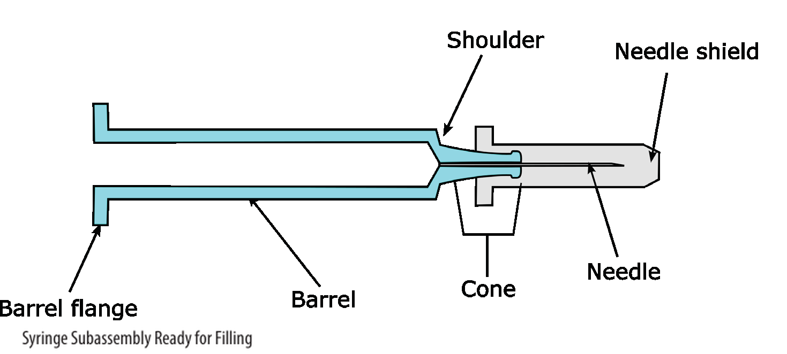

本章學習目標 Learning Objectives
- 說明人因工程（Human Factors Engineering, HFE）的核心目的，以及其在 PFS 產品開發中的作用
- 識別主要 HFE 相關法規標準與指引（Section 4.1），並理解不符合要求的後果
- 區分「形成性研究（formative study）」與「總結性/驗證性研究（summative/validation study）」的差異（Section 4.2）
- 描述裝置使用特性的三個面向：用戶族群、使用環境、預期使用場景（Section 4.3）
- 說明如何收集並定義終端使用者需求，作為使用者需求規格（User Requirements）的依據（Section 4.4）
原文內容 Original Text
Human factors engineering (HFE) considers a product's design, intended uses, users, and use environments, which can affect the safe and effective use of a product. The intent of HFE is to improve the quality of a product's user interface design to eliminate or minimize errors during use.
This section describes best practices related to the application of HFE and use-related risk management to the development of PFSs, including:
- key principles of HFE as they apply to PFSs (intended to supplement and not to replace the current health authority guidance and approaches described within recognized consensus standards)
- key considerations in understanding the use of PFSs
- typical areas of usability issues (known issues) to consider in the development of PFSs

Figure 4.0: TR73 section relationship diagram — Section 4.0 Human Factors sits alongside 5.0 E&L, 3.0 Development & Licensing, and feeds into downstream sections (glass barrel, needle, siliconization, etc.)
導師解析 Tutorial Commentary
核心概念解析 What Is HFE?
Human Factors Engineering (人因工程, HFE)：一門研究「人」與「產品/系統/環境」交互作用的工程學科。對 PFS 而言，核心問題是：真實使用者在真實情境下操作這支針筒時，會犯什麼錯誤？
User Interface (使用者介面)：不限於軟體。PFS 的使用者介面包括：針頭護套的拔除力道、標籤文字大小、活塞推力、注射終點的觸覺/視覺反饋。
Use-related risk management (使用相關風險管理)：識別、評估並控制因使用錯誤（use error）導致患者傷害的風險。與 ICH Q9 的品質風險管理互補，但聚焦在「人操作裝置」這個介面點。
比喻說明 Analogy
把 PFS 想成一台醫院用的血壓計：就算量測原理完全正確，若顯示字體太小、操作按鍵太難按、充氣聲音太吵讓護理師分心，這台機器仍然不合格。HFE 就是確保「正確的設計被正確地使用」的那門學問。
對 CDMO 而言，這提醒我們：光是通過 GMP 製程驗證，還不夠——最終產品能否被患者或護理人員正確使用，是同樣重要的合規要求。
重點提示 Key Note
本 TR73 Section 4 的 HFE 內容「補充」（supplement）而非「取代」現行法規指引（如 FDA CDRH 文件、IEC 62366）。CDMO 在做 HFE 計畫時，必須同時參照主管機關的正式指引，不能僅依賴 TR73。
練習思考 Practice Questions
- PFS 的「使用者介面」包含哪些實體元素？請舉三個例子。
- 「use error（使用錯誤）」與「device defect（裝置缺陷）」有何差異？為什麼兩者對法規申請同等重要？
原文內容 Original Text
Regulatory bodies may request evidence of acceptable human factors summative/validation testing results and supporting processes during premarket application or submission reviews.
The failure of manufacturers to apply a compliant and adequate HFE process can lead to serious consequences, including:
- product approval delays/nonapprovals
- negative audit and inspection findings
- clinical and market complaints
- ultimately an unsafe, ineffective, and unsuccessful product
Available HFE standards and guidances include those listed in Table 4.1-1 (see below).
導師解析 Tutorial Commentary
核心概念解析 Regulatory Landscape
Summative/Validation study (總結性/驗證性研究)：模擬真實使用條件，以代表性使用者族群驗證產品設計是否安全有效的正式研究。類似 PQ（Performance Qualification）——是最終的合格確認。
Premarket submission (上市前申請)：FDA 510(k)、PMA，或 EMA 的 MAA 等。主管機關在審查時，可能直接要求 HFE summative study 報告。
比喻說明 Analogy — HFE 研究 vs. 驗證階段
從 CDMO 驗證邏輯來看，HFE 的研究層次與廠房設備驗證高度對應：
- Formative study (形成性研究) → 如同 OQ（操作確效）：在設計迭代期間，反覆測試並修正，目的是找出問題並改善設計。
- Summative/Validation study (總結性研究) → 如同 PQ（性能確效）：在最終設計凍結後，以正式受試者族群確認產品符合使用安全要求，結果必須呈交主管機關。
就像不能跳過 OQ 直接做 PQ，也不能省略 formative study 直接做 summative study。
重點提示 Regulatory Consequences
HFE 流程不合規的後果非常具體：核准延誤、查廠缺失、市場投訴。對 CDMO 而言，這意味著客戶的上市時間表（timeline）直接受影響，合約中的里程碑付款也可能延遲。HFE 絕非「軟性需求」。
練習思考 Practice Questions
- 若 CDMO 客戶未在開發初期規劃 HFE formative study，可能在哪個開發階段才會發現問題？後果是什麼？
- Table 4.1-1 中，哪個標準最直接規範「醫療器材可用性工程」？它的全名是什麼？
Table 4.1-1: Human Factors Engineering-related Standards and Guidances 人因工程相關標準與指引
| Standard / Guidance ID | Title |
|---|---|
| ANSI/AAMI/IEC/EN 62366-1:2015 | Medical devices – Application of usability engineering to medical devices |
| AAMI/ANSI HE75:2009 | Human Factors Engineering – Design of Medical Devices |
| ISO 14971:2007/(R) 2012 | Medical Devices – Application of risk management to medical devices |
| IEC 60601-1-6:2010 | Medical electrical equipment – Part 1-6: General requirements for basic safety and essential performance – Collateral standard: Usability |
| IEC 60601-1-8 Edition 2.1 2012-11 | Medical electrical equipment – Part 1-8: General requirements for basic safety and essential performance – Collateral Standard: General requirements, tests and guidance for alarm systems in medical electrical equipment and medical electrical systems |
| IEC 60601-1-11:2010 | Medical electrical equipment – Part 1-11: General requirements for basic safety and essential performance – Collateral Standard: Requirements for medical electrical equipment and medical electrical systems used in the home healthcare environment |
| FDA/CDRH document # 1497 | Medical Device Use – Safety: Incorporating Human Factors Engineering into Risk Management (2000) |
| FDA/CDRH document # 1128 | Guidance on Medical Device Patient Labeling (2001) |
| FDA/CDRH document # 1757 | Applying Human Factors and Usability Engineering to Optimize Medical Devices (2011, draft*) |
| FDA/CDRH document # 1750 | Design Considerations for Devices Intended for Home Use (2014) |
| FDA/CDRH docket # HFA-305 | Safety Considerations for Product Design to Minimize Medication Errors (2012 draft*) |
| 21 CFR 820.30, Subparts A-D | Human Factors Implications of the New GMP Rule Overall Requirements of the New Quality System Regulation |
| EMA/606103/2014 | EMA Guidance – April 2015, Good practice guide on risk minimization and prevention of medication errors. Pharmacovigilance Risk Assessment Committee (PRAC). |
* FDA draft guidance documents marked with * are not intended for implementation until finalized and are subject to change.
原文內容 Original Text
The application of HFE throughout the product development process can optimize product design and minimize use-related failures and difficulties.
The need to perform a human factors summative/validation study and include human factors data in premarket submissions can be determined based on whether there are potential use errors that could cause harm.
For PFSs, there are known use errors that can result in delayed therapy (overdosing, underdosing, needle-stick injuries) and cause harm, such as reduced efficacy, infection, etc.
A human factors summative/validation study can demonstrate that representative users can use the device under simulated use conditions without producing patterns of failures that could result in negative clinical impact to patients or injury to device users (refer to Section 4.8).
導師解析 Tutorial Commentary
核心概念解析 Evaluation Framework
Use-related failure (使用相關失效)：不是裝置本身壞了，而是因使用者操作錯誤造成的失效。例如：患者未完整推到底（underdosing）、針頭護套未完全移除（dose blocking）。
Summative study 的觸發條件：只要存在「可能造成傷害的使用錯誤（potential use errors that could cause harm）」就必須進行。PFS 已有已知傷害模式（overdosing / underdosing / needle-stick），因此 summative study 幾乎是必要的。
比喻說明 Analogy
將 HFE 全流程套入 CDMO 開發邏輯：
- 早期 formative studies = 設計確認（Design Qualification, DQ）+ OQ 階段：識別問題、修正設計，反覆迭代。
- Summative/Validation study = PQ 階段：最終凍結設計後，用真實代表性使用者在模擬條件下執行，確認「無系統性失效模式」後才能提交申請。
PQ 報告不合格，產品無法放行。Summative study 失敗，上市申請將被拒。
重點提示 PFS-specific Known Use Errors
TR73 明確點出 PFS 的三大已知使用錯誤風險：
- Overdosing / Underdosing（過量/劑量不足）：活塞未完全推到底，或推過頭。
- Needle-stick injuries（針刺傷）：使用後針頭未安全遮蔽。
這三點直接決定 FDA/EMA 是否要求 summative study，CDMO 必須在開發早期就識別並記錄這些風險。
實務應用 CDMO Application
在 Amaran 進行 PFS 產品 CDMO 服務時，若客戶未提供完整 HFE 計畫，CDMO 應在技術轉移（Tech Transfer）階段主動確認：「是否已完成 formative studies？Summative study 何時排程？」缺乏此文件，可能導致 TFDA 或 FDA 查廠時出現缺失。
練習思考 Practice Questions
- 為何 PFS 幾乎必然需要進行 summative/validation study？
- Summative study 的「模擬使用條件」與真實臨床使用有何相同和不同之處？
原文內容 Original Text
The HFE process begins with characterizing device use. This includes consideration of user populations, use environment, and intended use scenarios as discussed below.
導師解析 Tutorial Commentary
核心概念解析 三大面向
Device-use characterization（裝置使用特性描述）是 HFE 流程的起點，必須在設計開始前完成。三個面向缺一不可：
- User populations（用戶族群）：誰在使用？
- Use environment（使用環境）：在哪裡使用？什麼條件下？
- Intended use scenarios（預期使用場景）：怎麼使用？用於什麼目的？
這三個面向共同構成 HFE 風險評估的輸入，也是後續 formative 和 summative study 的設計依據。
重點提示 Key Note
HFE 流程必須「從使用者出發」。這與傳統 CDMO 開發邏輯（從製程出發）不同。先定義「誰用、在哪用、怎麼用」，才能反向推導產品設計規格。
原文內容 Original Text
Common users of PFSs are healthcare providers, lay caregivers, and patients. User groups often have unique characteristics that are capable of affecting the user's ability to learn and use the product safely and effectively.
The generally accepted term for a distinct group of users with unique characteristics in HFE is "user population."
Within each user population, individual user characteristics may vary. Key areas of differences between users or user populations include:
- knowledge, skills, abilities, experience
- cognitive functioning, perceptual acuity, and manual dexterity
- user attitudes, emotions, and expectations
- gender, age, disease-related impairments, previous device experience and literacy, and education levels
The design of the device should be evaluated with individual users who are representative of the intended users.
Key considerations for users of injection devices in a home-use environment include:
- Injection-related anxiety/phobia: anxieties and phobias can make the task of self-injection difficult and may cause users to withdraw the needle before the injection is complete.
- Disease-related impairments: the same disease that the injection is intended to treat can impair the ability of users to inject the product by reducing hand and finger strength, impairing sensory abilities, and reducing manual coordination and dexterity.
- Negative transfer of learning between different products: users with prior experience with injection devices that operate in a specific way may incorrectly use a device that operates differently due to the assumption that the devices operate in the same way.
導師解析 Tutorial Commentary
核心概念解析 User Population 定義
User population（用戶族群）：具有共同特徵、且這些特徵會影響其使用裝置能力的一群人。PFS 的主要三族群：
- Healthcare providers（醫療專業人員）：醫師、護理師——受過正式訓練，但在高壓工作環境下可能分心。
- Lay caregivers（非專業照護者）：家屬——有照護意願，但技術能力和心理準備度差異大。
- Patients（患者）：本人自我注射——可能同時受疾病影響，例如類風濕關節炎患者手指無力。
比喻說明 Analogy — 操作員族群 vs. 用戶族群
在 CDMO 廠房，我們為不同班次、資歷的操作員設計 SOP 和培訓計畫。HFE 的「用戶族群」思維類似：
- 新進操作員（類比 naive patient）：需要更直觀的步驟和防呆設計。
- 資深操作員（類比 experienced HCP）：可能因「慣性操作」發生 negative transfer of learning，例如舊設備換新設備後仍用舊習慣操作。
CDMO 的 SOP 修訂（change control）就是管理「負向學習轉移」的工具。同樣地，PFS 設計若改變操作邏輯，必須評估用戶的 negative transfer 風險。
重點提示 Home-Use 三大特殊風險
Home-use 環境（居家使用）的 HFE 挑戰遠高於醫療機構：
- 注射恐懼症（Injection anxiety/phobia）：患者可能在針頭刺入後立即縮手，造成劑量不足（underdosing）。設計上需考慮注射完成的明確反饋（tactile click, visual indicator）。
- 疾病本身的功能損傷（Disease-related impairments）：類風濕關節炎、多發性硬化症的患者，正好是最常需要自我注射的族群，但其手部功能已受損。矛盾性極高，設計必須極度容錯。
- 負向學習轉移（Negative transfer of learning）：患者從某品牌針筆換到另一品牌後，直覺操作方式可能完全錯誤。上市後的 IFU（Instructions for Use）設計和用戶培訓計畫必須特別說明差異。
實務應用 CDMO Application
CDMO 在執行 tech transfer 時，應向客戶確認目標用戶族群（target user populations）的 HFE 文件是否完備。若客戶計畫將同一 PFS 用於「醫院 HCP 注射」和「居家患者自我注射」兩種場景，則兩個族群必須分開進行 formative 和 summative study——這會顯著影響開發時間軸和成本。
練習思考 Practice Questions
- 某生物製劑客戶的 PFS 目標使用者為「類風濕關節炎患者（自我注射）」，設計時需特別考量哪三個 HFE 風險？
- 「Negative transfer of learning」在 PFS 設計上，可以透過哪些設計手段降低風險？
原文內容 Original Text
The use environment can affect the user's ability to use a device safely and effectively. Specific considerations for HFE may include the following:
- Lighting (e.g., ambient, direct, and reflective light) that might affect the user's ability to see the syringe components, markings, and accessories
- Thermal factors (e.g., air temperature, humidity, heat, moisture, and air flow) that might affect how well the user can grip, hold, and inject the syringe
- Auditory factors (e.g., background noise and alarms) that might cause distractions and an inability to hear feedback from the syringe (if present)
- Workload (e.g., distraction and interruptions) that may cause difficulty, especially for users with cognitive, sensory, and/or manual dexterity impairment
導師解析 Tutorial Commentary
核心概念解析 四大環境因素
使用環境（Use Environment）不只是「在哪裡注射」，而是影響使用者感知和操作能力的所有物理、社會、認知因素的總和：
- 光照（Lighting）：視覺辨識——看得到刻度嗎？看得到氣泡嗎？
- 熱/濕度（Thermal factors）：握持能力——潮濕的手掌能握住玻璃針筒嗎？
- 聽覺（Auditory factors）：若 PFS 或自動注射器設計有聲音反饋（如 click 聲），在吵雜環境下能聽到嗎？
- 工作負荷（Workload）：認知負擔——急診護理師在分心狀態下操作的失誤率遠高於安靜環境。
比喻說明 Analogy — 環境因素 vs. CDMO 廠房人因
CDMO 在廠房設計的人因工程其實和 PFS 的 HFE 同源：
- Grade C/D 更衣室的照明設計（看得清楚操作嗎？）
- 無塵衣手套的觸感（帶手套仍能操作小零件嗎？）
- 設備警報聲音在高背景噪音環境中是否能被聽見？
廠房 HFE 研究（如 ergonomic assessment）與 PFS 使用環境評估是相同的方法論，只是應用場景不同。
重點提示 Home vs. Clinic Environment
醫療機構（controlled environment）vs. 居家使用（uncontrolled environment）的環境差異極大：
- 醫院：標準化照明、恆溫、低噪音。
- 居家：可能在昏暗廚房、浴室、移動中的車上使用；溫濕度不固定；寵物、孩童造成干擾。
若 PFS 計畫用於居家環境，使用環境的 HFE 評估必須涵蓋最差情境（worst-case scenario）。
練習思考 Practice Questions
- 某 PFS 設計了「push-and-click」的注射終點確認機制（依靠聲音反饋）。在居家使用環境中，這個設計有何 HFE 風險？
- 濕潤或出汗的手掌對 PFS 玻璃針筒的握持有何影響？設計上如何緩解？
原文內容 Original Text
Intended use scenarios describe how the user is expected to use the device. A device may also have multiple reasonably foreseeable use scenarios that may differ by user group.
For example, a healthcare provider may be required to select the appropriate product for a patient; the same healthcare provider may need to visually identify and select a PFS among PFSs containing different drug strengths or different drugs. Alternatively, it may be necessary for the patient to possess the ability to self-administer the drug in the selected PFS.
Use scenarios are determined in part by the intended use of the product, and may include such factors as:
- dosing regimen (e.g., variable dosing or fix dosing)
- dose frequency (e.g., once a day or once a month)
- type of medication (e.g., emergency versus routine)
- extent of training (e.g., naïve or experienced user)
- clinical supervision prior to or during use
Foreseeable scenarios involving misuse or use error (including stress, performing the tasks within a specific time limit, or the need to wear gloves when using the PFS) should be identified and considered part of the application of human factors' techniques during design of the user interface.
導師解析 Tutorial Commentary
核心概念解析 Intended vs. Foreseeable Use
Intended use scenarios（預期使用場景）：製造商設計時預期的使用方式。例如：「由護理師在門診環境中注射」。
Reasonably foreseeable use scenarios（合理可預見使用場景）：超出預期但現實中可能發生的使用方式。例如：「患者在緊急情況下自行注射、戴著厚手套注射、在昏暗環境下注射」。
HFE 要求製造商同時考慮兩者。忽視 foreseeable misuse，等同於放棄了一大塊風險控制。
比喻說明 Analogy — Use Scenario vs. 批次記錄設計
在 CDMO，批次記錄（Batch Record）設計時，我們會考慮「操作員在最差條件下仍能正確操作」——例如：戴著雙層手套書寫、在 C 級區穿著全套防護服確認標籤。
PFS 的 use scenario 設計邏輯相同：「最差使用情境下，患者仍能安全完成注射」。包括：戴手套（gloves）降低靈活度、壓力狀態下（stress）認知能力下降、時間限制（time limit）下操作。
重點提示 Foreseeable Misuse 的 HFE 義務
「合理可預見的誤用（reasonably foreseeable misuse）」必須納入 HFE 評估，這是 FDA 和 IEC 62366 的明確要求。若製造商能預見某使用錯誤模式但未採取設計防範，在產品傷害訴訟中將面臨重大法律責任。
舉例：如果 PFS 設計的針頭護套在使用後容易重新套上（recapping），但重新套上可能造成針刺傷，製造商必須評估並記錄此風險，並採取設計對策（如防重蓋機構）。
練習思考 Practice Questions
- 某腫瘤科藥物的 PFS 設計，目標使用場景為「腫瘤科護理師在門診靜脈注射」。請列出三個「合理可預見」但非預期的使用場景。
- 為何「戴手套操作 PFS」是 HFE 必須評估的 foreseeable scenario？在設計上如何回應？
原文內容 Original Text
After characterization of device use and prior to initiation of the design process, manufacturers should investigate and define end-user needs. End-user needs can be documented as user requirements, and as such, validated (i.e., are testable).
Multiple sources exist for defining user needs, such as the following:
- user group-specific needs (Section 4.3.1)
- use environment (Section 4.3.2)
- intended use (Section 4.3.3)
- potential hazardous situations that may arise (Section 4.6.1)
- reviews of relevant published material (Section 4.6.1.1)
- empirical research conducted by interviews or observations of potential users (Section 4.6.1.2)
- known use-related problems with the same or similar products
- health authority guidance(s) and consensus standards (Section 4.1)
User requirements may be further refined as new information is evaluated during device development.
導師解析 Tutorial Commentary
核心概念解析 User Needs → User Requirements
End-user needs（終端使用者需求）：使用者在使用情境中真正需要的能力或體驗。例如：「患者在關節炎狀態下，單手就能移除針頭護套」。
User requirements（使用者需求規格）：將 end-user needs 轉化為可測試（testable）的工程規格。例如：「針頭護套移除力不超過 X 牛頓，並在去除手套靈活度 Y% 的條件下測試」。
這個轉化過程是 HFE 與 QbD（Quality by Design）的交匯點：先定義使用者需求，再反向推導設計規格，最後驗證規格是否真正解決使用者問題。
比喻說明 Analogy — User Needs vs. URS
在 CDMO 設備採購中，我們先寫 URS（User Requirement Specification，使用者需求規格書），再讓廠商提案。PFS 的 User Requirements 邏輯完全相同：
- URS（設備）= User Requirements（PFS）
- FAT/SAT 驗收測試 = HFE summative validation study
- 廠商設計合規性 = PFS 設計合規性
差別在於：PFS 的 URS 是從「患者能力限制」出發，而不是從「製程需求」出發。
重點提示 八大使用者需求來源
TR73 列出八個定義 user needs 的資料來源，CDMO 在 tech transfer 時應確認客戶已涵蓋所有相關來源：
- 用戶族群特定需求（4.3.1）
- 使用環境（4.3.2）
- 預期用途（4.3.3）
- 潛在危害情境（4.6.1）
- 文獻回顧（4.6.1.1）
- 使用者訪談/觀察實證研究（4.6.1.2）
- 同類或類似產品的已知使用問題
- 法規機關指引及共識標準（4.1）
遺漏任何一項，都可能在 FDA/EMA 審查時被要求補充資料（deficiency letter）。
實務應用 CDMO Application
若 Amaran 承接一個新的 PFS 技術轉移案，客戶應在 tech transfer package 中提供「User Requirements Specification（URS）」文件。CDMO 的責任是確認製程能生產出符合這些 user requirements 的產品——例如，活塞推力（glide force）規格範圍必須涵蓋最差情境用戶（手部無力的患者）的操作能力上限。
練習思考 Practice Questions
- 「User needs（使用者需求）」和「User requirements（使用者需求規格）」的關鍵差異是什麼？為何後者必須是 testable？
- CDMO 在承接 tech transfer 時，應如何利用 Section 4.4 的八大來源核查客戶的 HFE 文件完整性？
- 若客戶的 user requirements 沒有考慮「使用者關節炎導致手部無力」這個場景，作為 CDMO 技術人員，你會如何提出質疑？
本節重點回顧 Section Summary (4.0–4.4)
- HFE 的核心目的：透過考慮產品設計、用途、使用者及使用環境，消除或最小化使用錯誤，保障患者安全。
- Standards (4.1)：IEC 62366-1、AAMI HE75、ISO 14971 等是主要 HFE 標準；FDA CDRH 文件和 21 CFR 820.30 是法規要求。不符規定的後果包括核准延誤、查廠缺失、市場投訴。
- HFE Evaluation (4.2)：PFS 存在已知使用錯誤（overdosing、underdosing、針刺傷），幾乎必然需要 summative/validation study。Formative study ≈ OQ；Summative study ≈ PQ。
- Device-Use Characterization (4.3)：三面向——用戶族群（誰用）、使用環境（哪裡用）、預期場景（怎麼用）。Home-use 環境特別需要考量注射恐懼、疾病損傷、負向學習轉移三大風險。
- User Needs (4.4)：先定義 end-user needs，再轉化為 testable 的 user requirements。來源涵蓋八個面向，並應隨開發進展持續精煉。